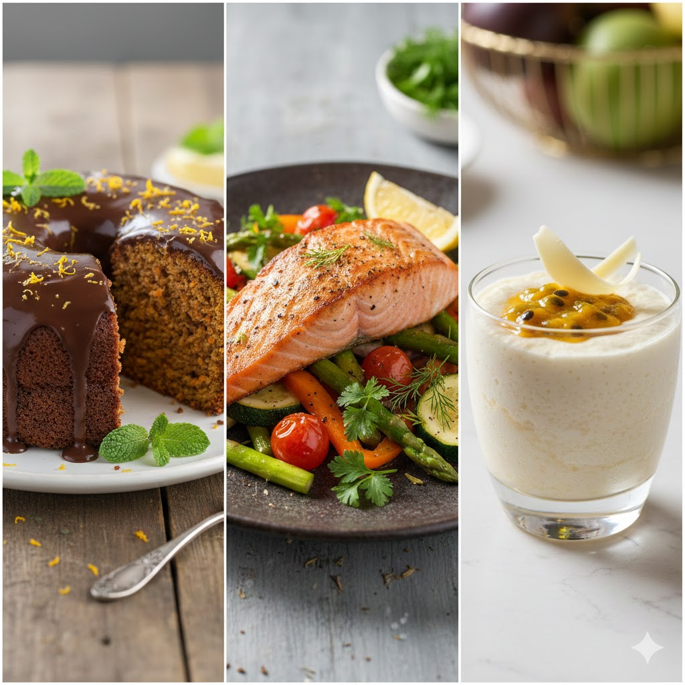
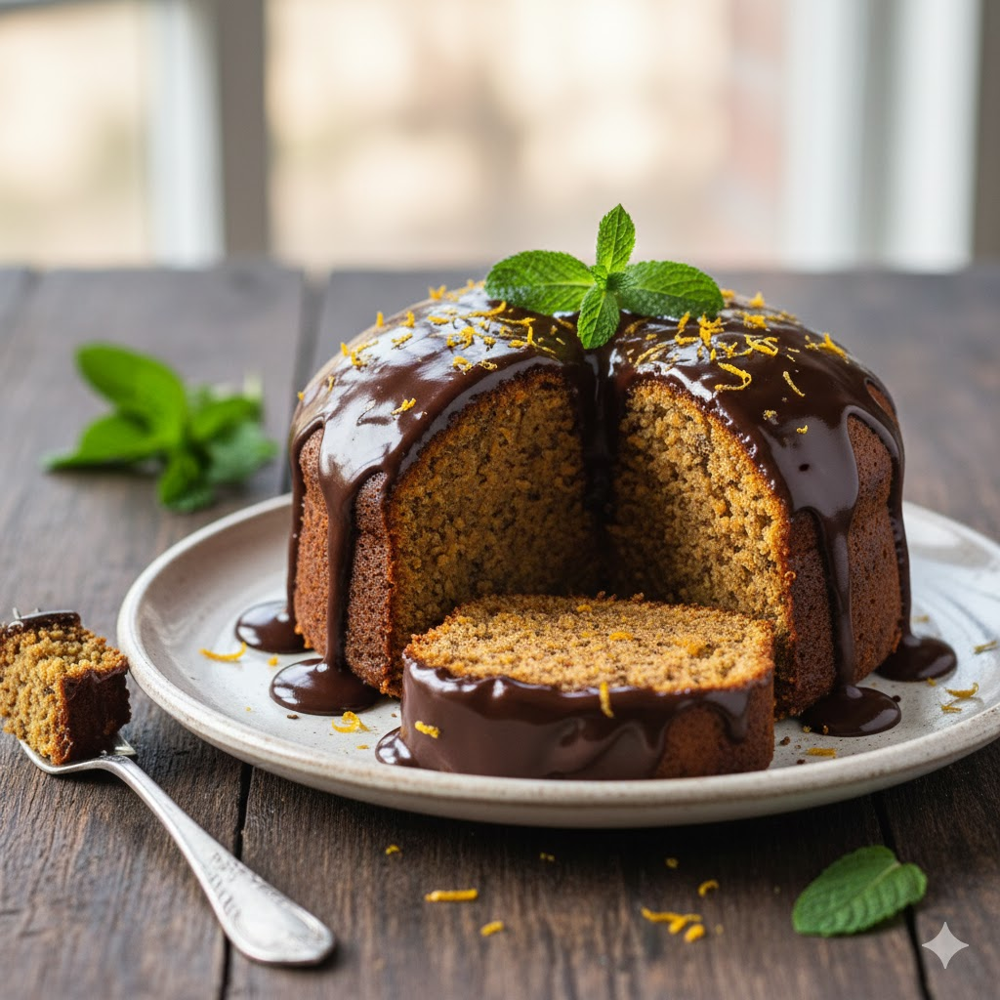
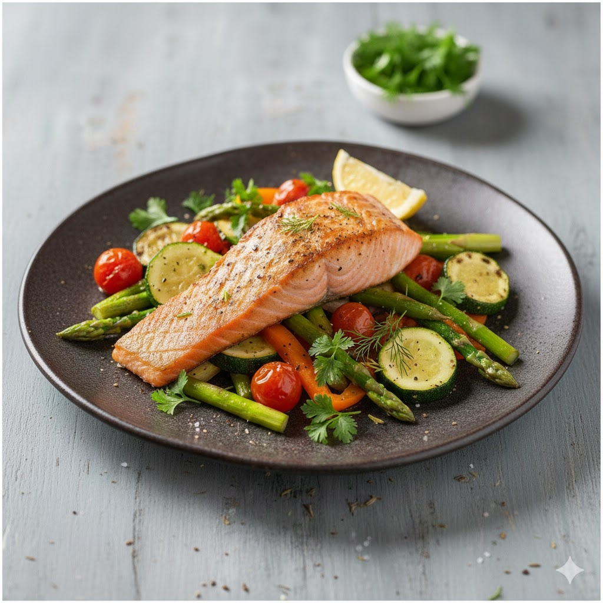
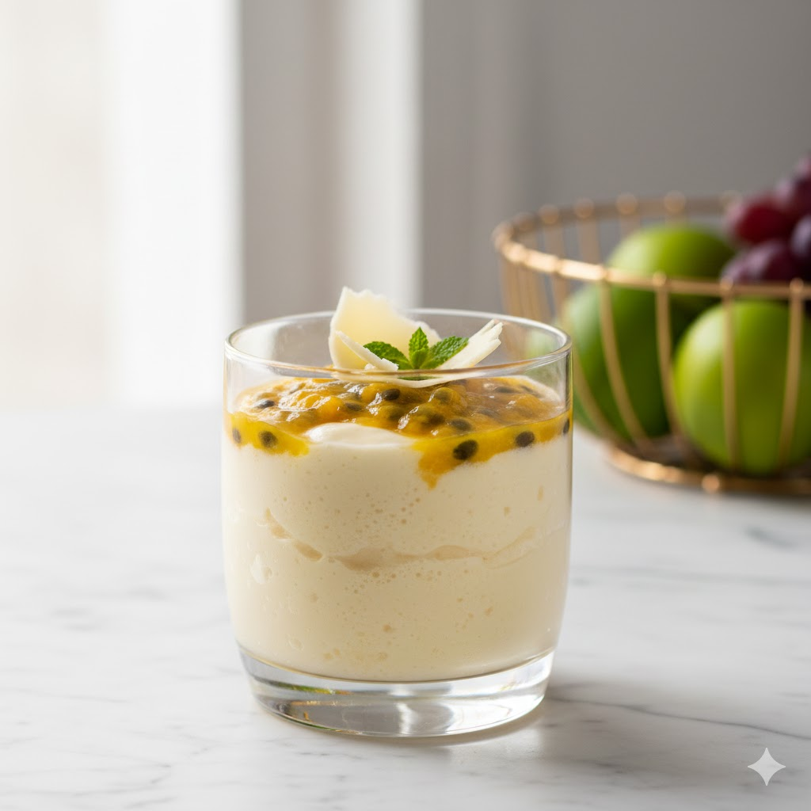

Minhas Receitas Favoritas
Bem-vindos ao meu cantinho culinário! Aqui, partilho um pedacinho da minha cozinha, com receitas que aquecem o coração e trazem alegria à mesa. Espero que se inspirem e desfrutem tanto quanto eu ao prepará-las. Bom apetite!

Bolo de Cenoura com Chocolate 🥕
Ingredientes
3 cenouras, 1 xícara de óleo, 3 ovos, 2 xícaras de açúcar, 2 xícaras de farinha e 1 colher de fermento.
Passo a passo
- Bata no liquidificador a cenoura, o óleo e os ovos.
- Despeje em uma tigela e misture o açúcar e a farinha de trigo.
- Por último, adicione o fermento e misture levemente.
- Asse em forno médio (180°C) por cerca de 40 minutos.
- Cobertura: Derreta chocolate com um pouco de creme de leite e jogue por cima.

Salmão Grelhado com Legumes 🐟
Ingredientes
2 filés de salmão, 1 abobrinha, 1 cenoura, tomates cereja, azeite, sal e limão.
Passo a passo
- Tempere o salmão com sal, pimenta e limão.
- Corte os legumes em tiras finas.
- Em uma frigideira bem quente com azeite, grelhe o salmão (comece pelo lado da pele).
- Na mesma frigideira, salteie os legumes até ficarem macios, mas crocantes.
- Sirva o salmão sobre a cama de legumes.

Mousse de Maracujá 🍮
Ingredientes
1 lata de leite condensado, 1 lata de creme de leite, 1 xícara de suco concentrado de maracujá.
Passo a passo
- No liquidificador, bata o leite condensado e o creme de leite por 2 minutos.
- Com o liquidificador ainda ligado, adicione o suco de maracujá aos poucos até engrossar.
- Despeje em taças individuais ou em um refratário.
- Leve à geladeira por pelo menos 3 horas antes de servir.
